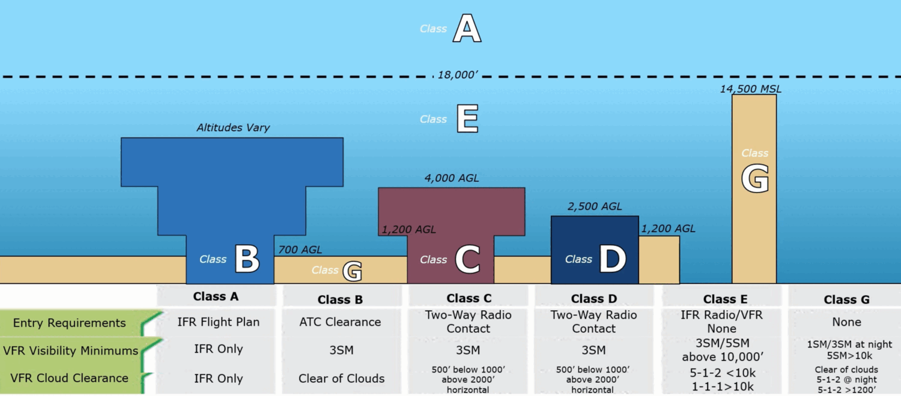
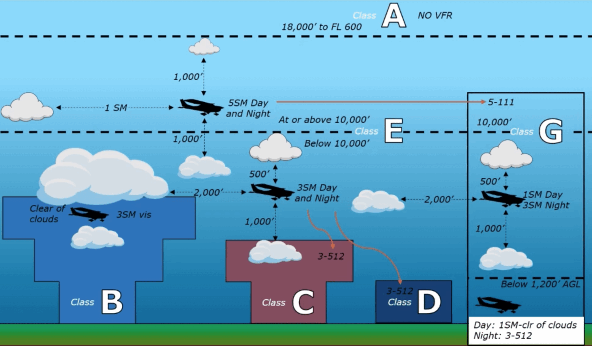
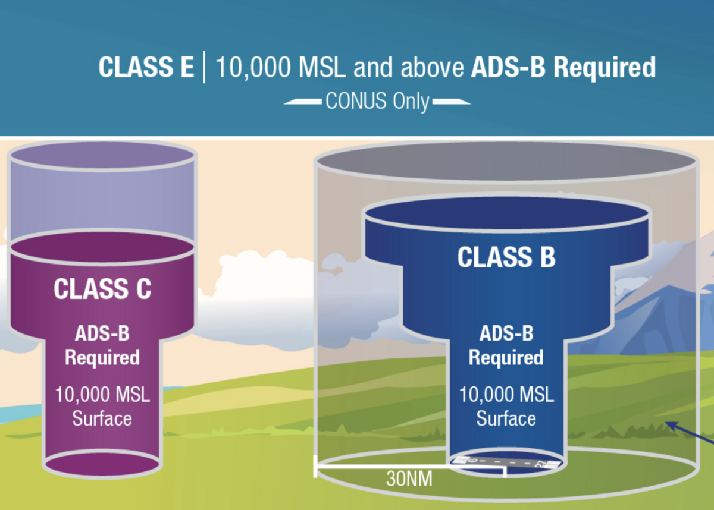

Airspace
The classes from A to G, what it takes to fly VFR in each, the special-use areas, and how it all looks on a sectional chart.
The big picture
Controlled airspace (A, B, C, D, E) is where ATC provides services; Class G is uncontrolled. Towered airports require two-way radio communication.

The classes, one by one
The chart marking for each class is shown beside it.
- IFR only — no VFR
- 18,000′ MSL – FL600
- Altitude-defined (no chart line)
- Explicit ATC clearance ("cleared into the Bravo")
- Two-way radio contact
- Surface → 4,000′ AGL, ~10 NM radius
- Procedural outer area to ~20 NM
- Two-way radio contact
- Up to ~2,500′ AGL
- Controlled "everything else"
- Floors at surface, or 700′/1,200′ AGL
- Uncontrolled
- Whatever's below the Class E floor
A number in brackets is the Class D ceiling in hundreds of feet MSL — e.g. [29] = 2,900′ MSL. An altitude printed with a minus sign (e.g. -29) means "up to but not including" that altitude.
ATC services by class
What ATC provides differs by class — biggest difference is who gets separation:
| Airspace | VFR separation from | Sequencing | Traffic advisories / safety alerts |
|---|---|---|---|
| Class B | All aircraft (IFR & VFR) | Yes, for all aircraft | Yes |
| Class C | IFR aircraft only | Yes, to the primary airport | Yes |
| Class D | None | Visual runway sequencing only | Workload permitting |
VFR weather minimums & cloud clearances
Cloud clearance for C, D, and E below 10,000′ MSL (+ G at night):
- 1 — 1,000 ft above
- 5 — 500 ft below
- 2 — 2,000 ft horizontal
- Controlled airspace below 10,000′ (C/D/E): 3 SM & 152.
- At/above 10,000′ (E & G): 5 SM & 111.
- Class B: 3 SM, just clear of clouds.
- Class G, day, low (≤1,200′ AGL): 1 SM, clear of clouds.

Special-use airspace
| Type | Rule |
|---|---|
| Prohibited (P) | banned No flight, ever. |
| Restricted (R) | permission Enter only when inactive / with clearance. |
| MOA / Military | allowed, caution VFR may enter; use caution / check if active. |
| Warning Area | Caution. (typically in international waters) |
Transponders & the Mode C veil
- Mode C transponder + ADS-B Out are required wherever Mode C is: Class A/B/C, above the B/C shelves, above 10,000′ MSL (except below 2,500′ AGL), and within the 30 NM Mode C veil around Class B (surface–10,000′ MSL).
They go hand in hand: anywhere a Mode C transponder is required, ADS-B Out is required too.
Anti-collision lights on whenever the aircraft is operating (day or night) — unless the PIC turns them off in the interest of safety.
